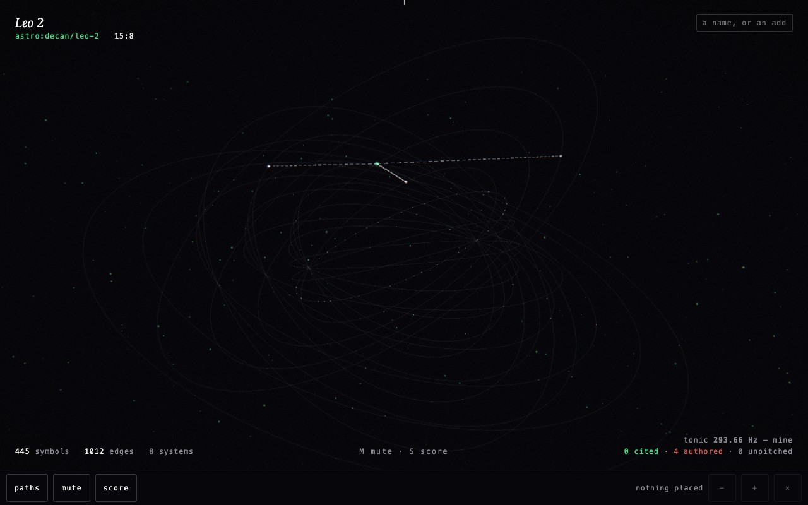
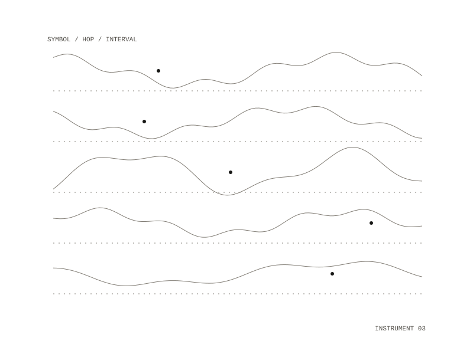

monochord
A correspondence graph you walk to play and stand in to sustain, in the browser. Named for Robert Fludd's Divine Monochord (1617): the universe drawn as a single tuned string with the planets at interval positions.


Three audible states
- A source licenses a pitch: a tone.
- Arrived, but nothing licenses a pitch: unpitched, struck and damped.
- Nothing was reached: a rest, and the kind of rest is audible.
Timbre carries how well attested a link is; volume never does, because a louder note reads as a better-supported one. An established link is one pure tone. A contested one is two oscillators eighteen cents apart, beating: you hear two sources disagreeing.
Walking
Walk puts your eye inside the graph. Every shape sounds from its own place, so near is louder, and a shape moves across your ears as you pass it. Nothing is ranked: no relevance sort, no strength ordering, no layout that pulls things together by how strongly they are linked.
A piece can leave
A walk leaves as a Strudel patch and a programme note naming every source it rests on. The tuning survives the trip: a cited fifth is 702 cents, not a piano's 700.
The graph is Divinatory OS, read in place: 1,088 symbols, 2,009 edges, eight systems.
Rust compiled to WebAssembly
Web Audio, Strudel